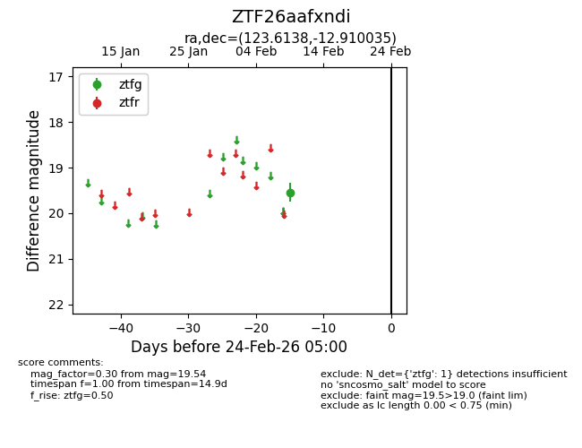
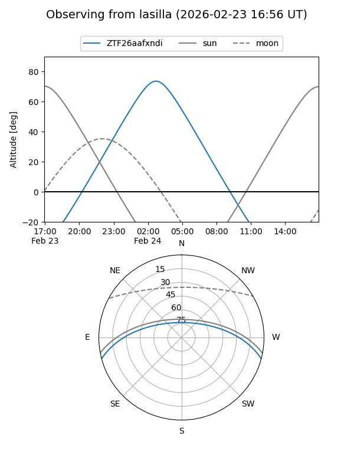
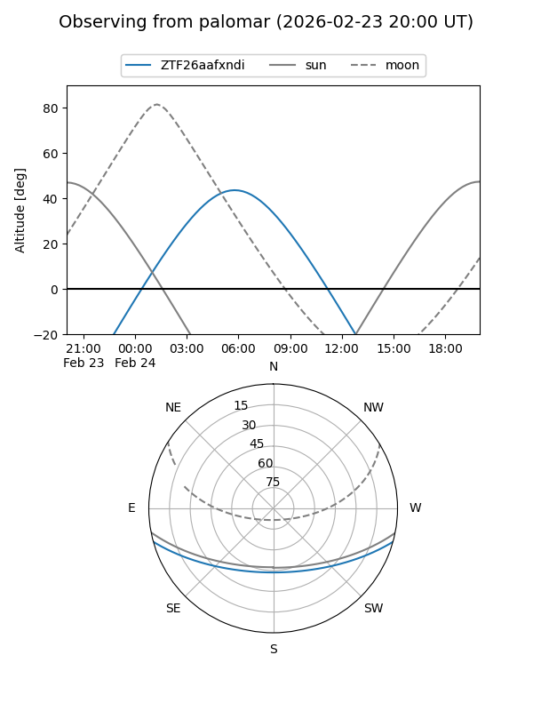

ZTF26aafxndi
Target ZTF26aafxndi at 2026-02-24 09:08
Aliases and brokers:
FINK: link
Lasair: link
ALeRCE: link
alt names
ZTF26aafxndi (ztf,fink_ztf)
Coordinates:
equatorial (ra, dec) = 123.6138,-12.91004
equatorial (HMS+DMS) = 08:14:27.31,-12:54:36.13
galactic (l, b) = (234.2850,+11.86049)
Flags:
Photometry:
last ztfg=19.54
1 ztfg detections
Lightcurve

Visibility


Additional plots